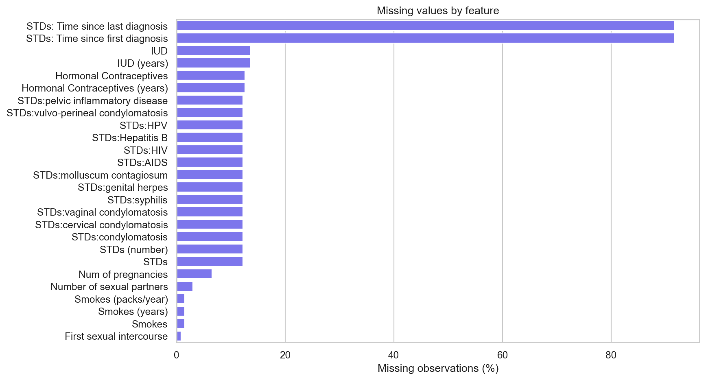
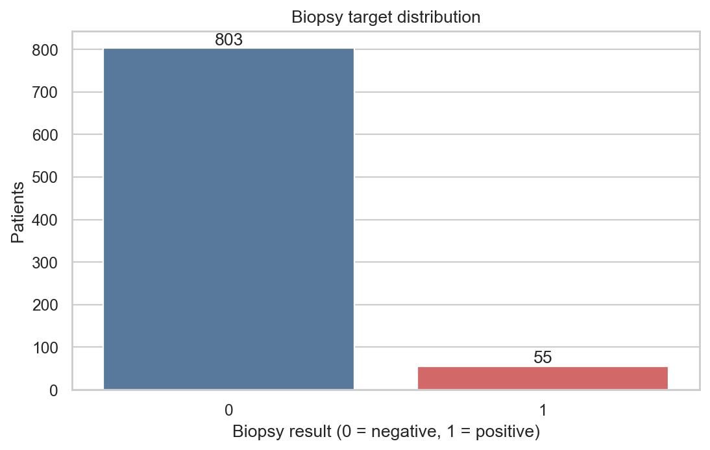
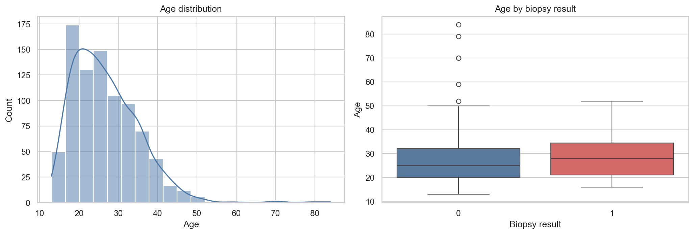
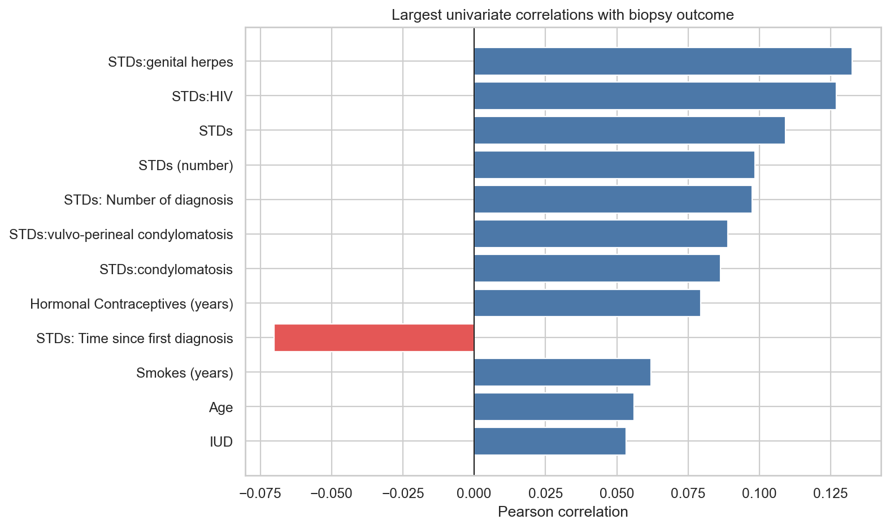
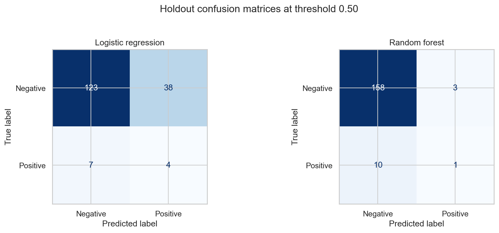
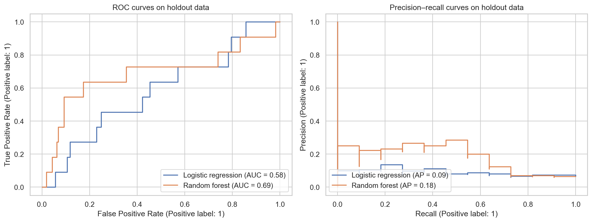
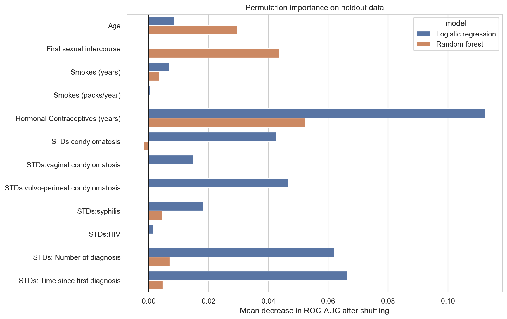

1. Overview
This project asks whether pre-diagnostic risk factors in a dataset of 858 patients can rank the likelihood of a positive cervical biopsy. It is designed as a transparent learning exercise, not a clinical product.
2. Dataset and prediction question
One row represents one patient. Features describe age, sexual and
reproductive history, smoking, hormonal contraceptive and IUD use,
and STD history. The binary Biopsy field is the target.
| Feature family | Examples | Use |
|---|---|---|
| Demographic | Age | Predictor |
| Behavioral | Sexual partners, smoking | Predictor |
| Reproductive | Pregnancies, contraceptive/IUD history | Predictor |
| STD history | Indicators, timing, counts | Predictor |
| Screening/diagnosis | Hinselmann, Schiller, Citology, Dx fields | Excluded |
| Outcome | Biopsy | Target |
The source encodes unknown values as ?. The notebooks
replace that marker with NumPy missing values and explicitly convert
every column to numeric form. This avoids accidental string
comparisons and makes missingness measurable.
data = (pd.read_csv(DATA_PATH)
.replace("?", np.nan)
.apply(pd.to_numeric, errors="coerce"))3. Exploratory data analysis
The first notebook validates the target, plausible age range, duplicates, empty columns, missingness, class balance, selected feature distributions, and univariate correlations. Its job is to understand the evidence—not to tune the final test result.




4. Leakage control
Using a screening outcome or recorded diagnosis to predict biopsy
can reveal information too close to the answer. The model excludes
Hinselmann, Schiller,
Citology, Dx:Cancer, Dx:CIN,
Dx:HPV, and Dx, as well as the target
itself.
Demographic, behavioral, reproductive, and STD-history variables.
Biopsy, screening outcomes, and recorded diagnosis fields.
This makes the experiment more honest, but true temporal availability still requires confirmation by clinical domain experts.
5. Modeling pipeline
The data is split 80/20 with stratification and random seed 42. Training contains 686 rows and 44 positives; holdout testing contains 172 rows and 11 positives.
Logistic regression
The transparent baseline receives median-imputed and standardized features. Balanced class weights prevent the majority negative class from dominating the loss.
Random forest
The nonlinear comparison receives median-imputed values without scaling. It uses 500 trees, a minimum leaf size of three, and balanced subsample weights to reduce variance and acknowledge imbalance.
Both workflows are scikit-learn pipelines. Therefore, the imputer and scaler are learned only from the current training fold rather than from the full dataset.
6. Validation design
Five-fold stratified cross-validation runs only on training data. In each iteration, preprocessing is refitted on four folds before the fifth is scored. The holdout remains untouched until both model definitions are fixed.
| Model | ROC-AUC | PR-AUC | Recall | Precision | F1 |
|---|---|---|---|---|---|
| Logistic regression | 0.573 ± 0.074 | 0.133 ± 0.030 | 0.431 ± 0.103 | 0.111 ± 0.023 | 0.176 ± 0.035 |
| Random forest | 0.622 ± 0.045 | 0.161 ± 0.058 | 0.044 ± 0.089 | 0.067 ± 0.133 | 0.053 ± 0.107 |
7. Holdout results
| Model | Accuracy | Precision | Recall | F1 | ROC-AUC | PR-AUC |
|---|---|---|---|---|---|---|
| Logistic regression | 0.738 | 0.095 | 0.364 | 0.151 | 0.578 | 0.092 |
| Random forest | 0.924 | 0.250 | 0.091 | 0.133 | 0.685 | 0.185 |
| XGBoost comparison | 0.797 | 0.125 | 0.364 | 0.186 | 0.660 | 0.219 |
The random forest ranks cases better overall but finds only 1 of 11 positive holdout cases at threshold 0.50. Logistic regression and the retained XGBoost comparison each find 4 of 11, but have low precision. This is exactly why the previous accuracy-only story was inadequate.


Metric meanings
- Recall: fraction of positive biopsies detected.
- Precision: fraction of positive alerts that are correct.
- F1: harmonic balance between precision and recall.
- ROC-AUC: probability-ranking quality across thresholds.
- PR-AUC: rare-positive precision/recall trade-off across thresholds.
8. Interpretation
Permutation importance shuffles a feature in the holdout set and measures the decline in ROC-AUC. It describes what each fitted model relies on; it does not identify causes or medical risk mechanisms.

9. Reproduce the work
python -m venv .venv
.venv\Scripts\Activate.ps1
python -m pip install --upgrade pip
pip install -r requirements.txt
jupyter lab
Run 01_exploratory_data_analysis.ipynb first and
02_model_development.ipynb second. Both notebooks have
already been executed successfully and contain their outputs.
10. Limitations and responsible use
- Only 55 positive biopsies exist.
- The data originates from one hospital and may not generalize.
- Missingness mechanisms are unknown.
- No external or temporal validation was performed.
- Probabilities are not clinically calibrated.
- No subgroup fairness analysis was performed.
- Predictor timing needs clinical confirmation.
- The 0.50 threshold is illustrative, not a medical cutoff.
- Association and model importance do not imply causation.
11. File guide and data acknowledgement
The EDA notebook explains and generates all descriptive figures. The
modeling notebook defines the leakage boundary, validation protocol,
metrics, plots, and interpretation.
final_cervical_cancer_risk_modeling.ipynb is the
preserved and consolidated final notebook: it retains the original
EDA views and XGBoost idea while using the reviewed workflow. The
README is the GitHub-first walkthrough; this file is a standalone,
printable master guide.
The dataset is commonly distributed as the UCI Cervical Cancer (Risk Factors) dataset and describes patients from Hospital Universitario de Caracas, Venezuela. Verify current dataset licensing and citation requirements before redistribution. The parent repository's MIT license applies to code, not automatically to third-party data.